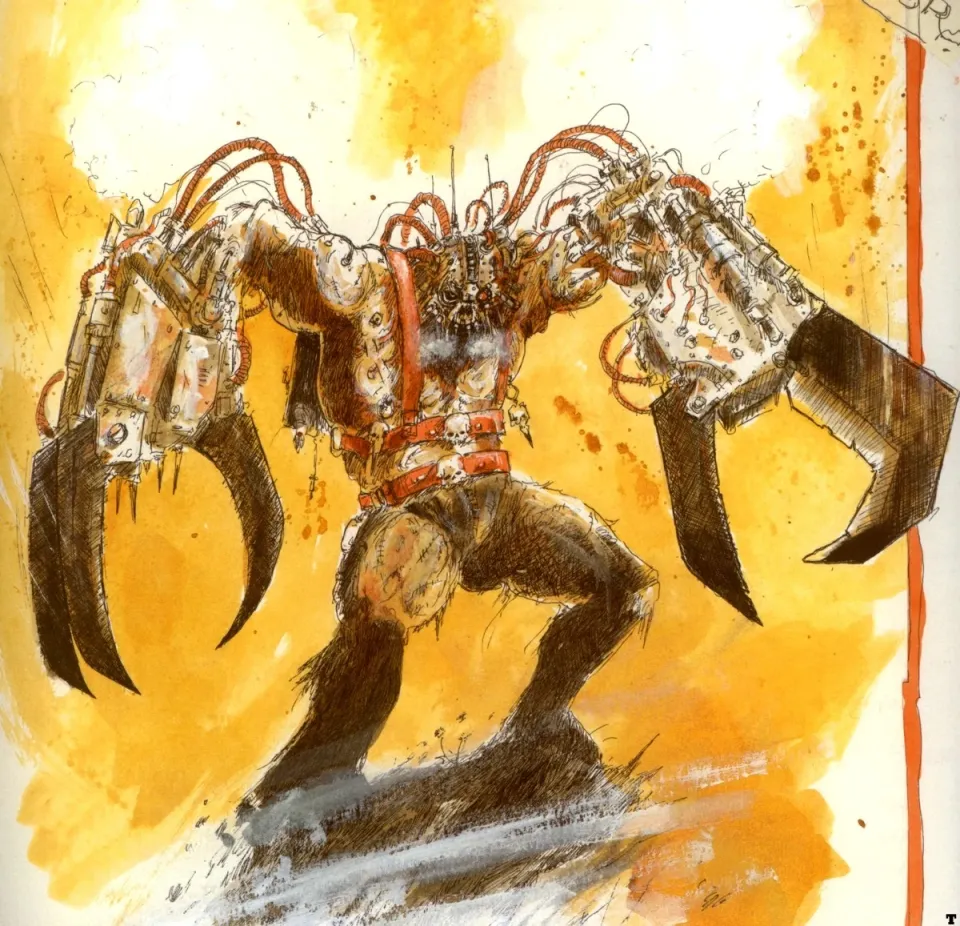
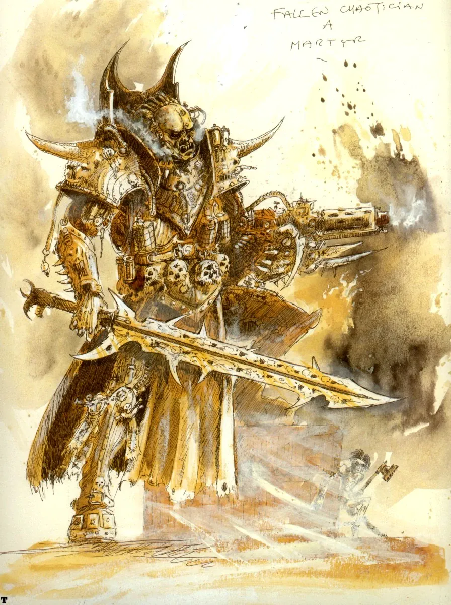
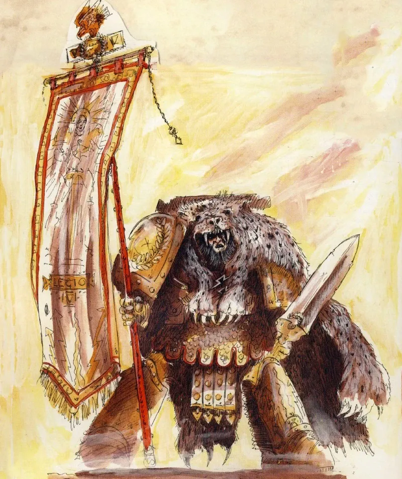
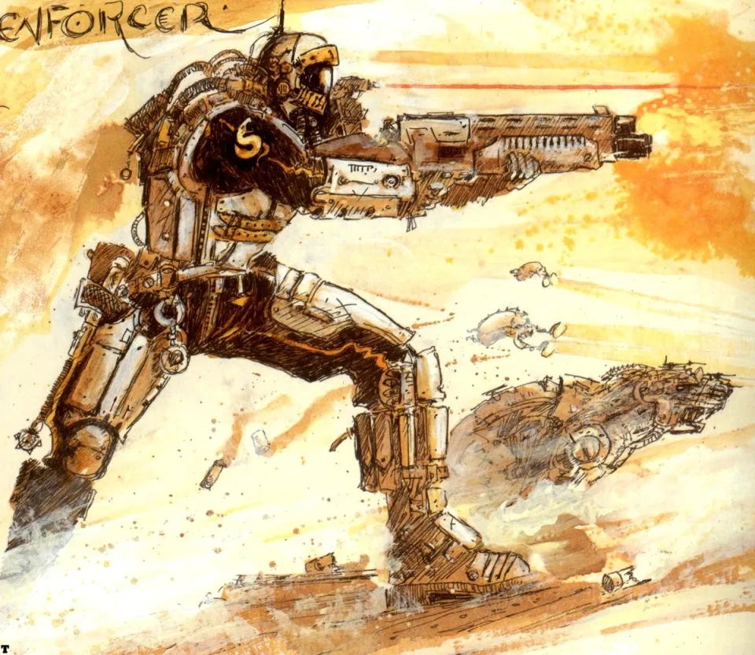
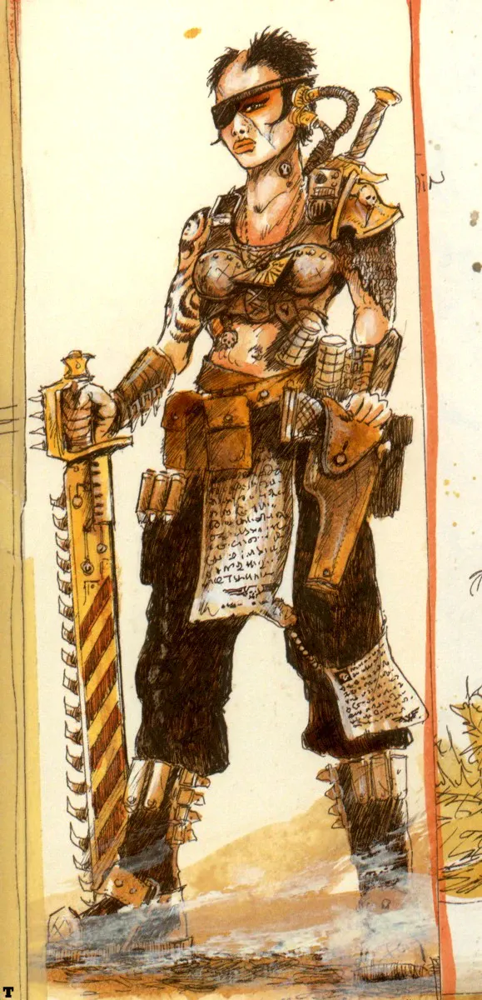
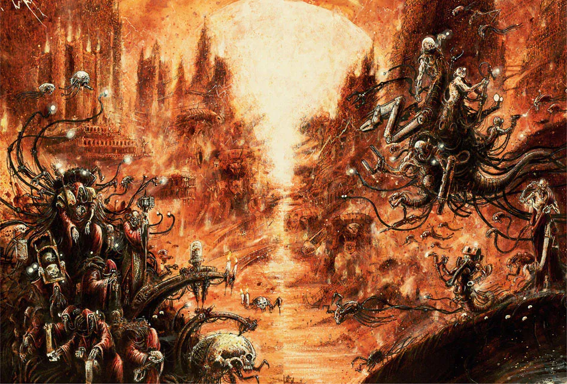

01ภาพรวม: ทำไมต้องรวม Terra ก่อน
ทุกเรื่องราวของจักรวรรดิมนุษย์เริ่มต้นที่นี่ — บนดาว Terra (เทอร์รา) ซึ่งก็คือโลกของเรา ในช่วงปลายสหัสวรรษที่ 29 โลกไม่ได้เป็นศูนย์กลางของอะไรอีกแล้ว มันเป็นซากปรักหักพังที่ถูกแบ่งโดยขุนศึกหลายสิบกลุ่มที่รบกันมาหลายพันปี
ชายลึกลับคนหนึ่งที่มีชีวิตอยู่ท่ามกลางมนุษย์มาตั้งแต่ยุคหิน — ภายหลังถูกเรียกว่า จักรพรรดิแห่งมนุษยชาติ (Emperor of Mankind) — ตัดสินใจว่าถึงเวลาเปิดเผยตัว เขารู้ว่าถ้ามนุษย์ยังแตกแยก จะไม่มีทางรอดจากภัยในกาแล็กซีได้ และก่อนจะออกไปรวมดาวนับล้านดวง เขาต้องรวมบ้านเกิดให้ได้ก่อน สงครามที่ตามมาจึงถูกเรียกว่า Unification Wars (ยูนิฟิเคชัน วอร์ส) หรือ "สงครามรวมแผ่นดิน"
- จักรพรรดิใช้ทหารดัดแปลงพันธุกรรมชื่อ Thunder Warrior บุกปราบขุนศึกทีละรัฐ
- สงครามกินเวลาหลายร้อยปี จบลงเมื่อราว 712.M30 เมื่อทั้งดาวยอมรับธงนกอินทรีของพระองค์
- ผลพลอยได้คือ Space Marine Legion รุ่นแรก, Legio Custodes และพันธมิตรกับดาวอังคาร ซึ่งเป็นรากฐานของ Great Crusade
02ฉากหลัง: Terra ในยุค Old Night
ก่อนหน้านี้มนุษย์เคยรุ่งเรืองที่สุดในยุค Dark Age of Technology แต่เมื่อเข้าสู่ Age of Strife (ยุคแห่งความขัดแย้ง หรือ "Old Night") พายุ Warp ขนาดมหึมาที่เกิดจากการก่อตัวของเทพ Slaanesh ตัดขาดการเดินทางระหว่างดวงดาวนานราว 5,000 ปี ดาวแต่ละดวงต้องเอาตัวรอดเอง
บน Terra รัฐบาลกลางพังทลาย ดาวถูกแบ่งเป็นรัฐเล็กรัฐน้อยที่แฟน ๆ เรียกว่า techno-barbarian — คนเถื่อนที่ยังถือเทคโนโลยีเก่า เช่น อาวุธนิวเคลียร์ อาวุธชีวภาพ และร่างกลไก แต่ไม่เข้าใจหลักการของมันอีกแล้ว สงครามดำเนินต่อเนื่องราว 2,500 ปีจนดาวกลายเป็นทะเลทรายพิษ ประชากรกลายพันธุ์จากรังสีและเชื้อโรค


ที่น่ากลัวกว่าสงครามคือพลังของ Warp ขุนศึกบางคนบูชา "เทพดึกดำบรรพ์" และใช้ผู้มีพลังจิต (psyker) เป็นอาวุธ ซึ่งในเนื้อเรื่องคือเงาของ Chaos ที่แทรกซึมเข้ามาตั้งแต่ก่อนจักรวรรดิจะเกิด
03จักรพรรดิเปิดตัว
จักรพรรดิทำงานอยู่เบื้องหลังมาหลายพันปีภายใต้ตัวตนที่เปลี่ยนไปเรื่อย ๆ จนถึงยุคนี้พระองค์ก่อตั้งฐานลับใต้เทือกเขา Himalazia (เทือกเขาหิมาลัยในปัจจุบัน) และเริ่มทดลองด้านพันธุกรรมเพื่อสร้างทหารที่เหนือกว่ามนุษย์
พระองค์ไม่ได้เข้าไปในฐานะนักบวชหรือศาสดา แต่ประกาศตัวเป็นผู้นำที่มีเหตุผล ภายใต้ธง Raptor Imperialis (นกอินทรีกับสายฟ้า) และอุดมการณ์ที่ต่อมาเรียกว่า Imperial Truth — ไม่มีพระเจ้า มีแต่วิทยาศาสตร์และเหตุผล ศาสนาคือความงมงายที่ทำให้มนุษย์อ่อนแอ
เรื่องสั้น The Last Church เล่าว่าก่อนสงครามจะจบ จักรพรรดิไปพบนักบวชชื่อ Uriah Olathaire ที่ดูแลโบสถ์หลังสุดท้ายบน Terra ทั้งสองถกเถียงกันทั้งคืนเรื่องศรัทธากับเหตุผล ก่อนที่โบสถ์จะถูกทำลาย — ฉากนี้สะท้อนว่าจักรพรรดิเกลียดศาสนาเพียงใด ซึ่งย้อนแย้งกับยุค 40K ที่ทั้งจักรวรรดิบูชาพระองค์เป็นพระเจ้า
04Thunder Warriors: ทหารสายฟ้า

กำลังหลักของจักรพรรดิคือ Thunder Warriors (ธันเดอร์ วอร์ริเออร์ส) หรือ Legio Cataegis — ชายผู้ใหญ่ที่ถูกดัดแปลงพันธุกรรมจนตัวใหญ่ แข็งแรง และดุร้ายกว่ามนุษย์มาก หลายแหล่งบอกว่าพวกเขาแข็งแรงกว่า Space Marine ในยุคหลังเสียอีก และสวมชุดเกราะรุ่นแรกที่ภายหลังนับเป็น Mark I Thunder Armour
จุดแข็ง
- พละกำลังและความทนทานมหาศาล
- ไม่กลัวตาย ฆ่าศัตรูได้เป็นพันในศึกเดียว
- รบชนะในศึกที่กองทัพมนุษย์ปกติทำไม่ได้
จุดอ่อน
- ถูกดัดแปลงตอนเป็นผู้ใหญ่ ร่างกายจึงต่อต้านการดัดแปลง
- อายุสั้น หลายคนเสียชีวิตจากร่างกายล้มเหลวภายในไม่กี่สิบปี
- จิตใจไม่มั่นคง ถูกสร้างมาเพื่อรบอย่างเดียว ไม่เหมาะกับยามสงบ
นอกจาก Thunder Warrior แล้ว จักรพรรดิยังมี geno-soldier ทหารดัดแปลงพันธุกรรมระดับเบากว่า เช่น กรม Geno Five-Two Chiliad ที่ภายหลังรวมกันเรียกว่า "Old Hundred" ซึ่งรอดมาจนเป็นแกนของ Imperial Army ใน Great Crusade และยังมี Legio Custodes องครักษ์ทองคำที่จักรพรรดิสร้างเองทีละคน


05รัฐ techno-barbarian ที่จักรพรรดิต้องปราบ
Terra ยุคนั้นมีรัฐอิสระหลายสิบรัฐ แต่ละรัฐมีวิธีรับมือกับจักรพรรดิต่างกัน บางรัฐยอมแต่โดยดี บางรัฐสู้จนตัวตาย ตัวอย่างที่บันทึกไว้:
Ursh (รัสเซีย–เอเชียกลาง)
รัฐที่ใหญ่และแข็งแกร่งที่สุด ปกครองโดยขุนศึก Kalagann ผู้ใช้เวทมนตร์และ psyker ในกองทัพ เขาถูกสังหารและ Ursh ถูกพิชิต ชุดเกราะ "Armour of Pearl" ของเขาถูกเก็บเป็นถ้วยรางวัลไว้ที่ประตู Eternity Gate ในพระราชวัง
Pan-Pacific Empire (เอเชียตะวันออก–แปซิฟิก)
ปกครองโดย Narthan Dume ทรราชที่ถูกบรรยายว่า "ครึ่งบ้าครึ่งอัจฉริยะ" ถูกจับได้หลังเมือง Vhnori แตก และถูกประหารตามคำแนะนำของ Constantin Valdor หัวหน้า Custodes
Ethnarchy of the Caucasus Wastes
คณาธิปไตยกลายพันธุ์ที่ซ่อนป้อมไว้ลึกใต้ภูเขา การบุกครั้งแรกล้มเหลว เสีย Thunder Warrior เกือบหมื่นนาย ครั้งที่สองจักรพรรดินำทัพเอง และให้ Legion ที่ XVIII (ภายหลังคือ Salamanders) ขุดอุโมงค์เข้าไปทำลายเตาพลังงานใต้ดิน กลายเป็นเกียรติยศแรกของ Legion นี้
Albia (หมู่เกาะอังกฤษ)
ต้านทานได้ดุเดือดจนจักรพรรดิประกาศหยุดยิง แล้วเดินเข้าไปเจรจาโดยไม่มีอาวุธ ขุนศึก Albia ยอมรับและกลายเป็นผู้สนับสนุนตัวยง ชาว Albia ถูกคัดเป็นทหารของ Legion ที่ XIV (Dusk Raiders → Death Guard)
Achaemenid Empire (อิหร่าน)
รัฐของชนเผ่าร่ำรวยที่เข้าร่วมกับจักรพรรดิแต่เนิ่น ๆ จึงรอดจากสงคราม ประชากรมีพันธุกรรมสะอาด จึงถูกคัดเป็นทหารรุ่นแรกของ Thousand Sons รวมถึงพี่น้อง Ahzek และ Ohrmuzd Ahriman
Yndonesic Bloc (อินโดนีเซีย)
ปกครองโดย Cardinal Tang ผู้เผาทำลายนักวิทยาศาสตร์และทำการล้างเผ่าพันธุ์ แต่ถูกประชาชนของตัวเองโค่นในช่วงที่จักรวรรดิกำลังรุ่งขึ้น และถูกเพื่อนนักโทษฆ่าในคุก

06ลำดับเหตุการณ์
จักรพรรดิเปิดตัว
จักรพรรดิเริ่มสงครามรวม Terra ด้วยกองทัพ Thunder Warrior และ geno-soldier เริ่มโครงการ Primarch ในห้องทดลองใต้ Himalazia
ศึก Xozer ครั้งที่ 9
กองทัพจักรพรรดิสังหาร Kalagann ขุนศึกแห่ง Ursh ในดินแดน Nordafrik รัฐที่ใหญ่ที่สุดบนโลกถูกพิชิต
First Founding: Space Marine รุ่นแรก
จักรพรรดิใช้พันธุกรรมจากโครงการ Primarch สร้าง gene-seed และ Legion ทั้ง 20 ของ Legiones Astartes
บุก Luna ครั้งแรก
Legion รุ่นแรกสามกองออกรบนอกโลกเป็นครั้งแรก บุกดวงจันทร์ Luna ของกลุ่มนักพันธุกรรม Selenar ที่ปฏิเสธการเจรจา
ศึกภูเขา Ararat และจุดจบของ Thunder Warrior
ศึกใหญ่ครั้งท้าย ๆ ที่ภูเขา Ararat (Arrarat) — Thunder Warrior กลุ่มสุดท้ายถูกกวาดล้าง บันทึกทางการบอกว่าพวกเขาตายอย่างวีรบุรุษ แต่หลายแหล่งบอกว่าจักรพรรดิเป็นผู้สั่งกำจัด
Terra รวมเป็นหนึ่ง
จักรพรรดิประกาศชัยชนะ ทั้งดาวยอมรับรัฐบาลเดียวและ Imperial Truth
สนธิสัญญาดาวอังคาร (Treaty of Olympus)
จักรพรรดิเจรจากับ Mechanicum บนดาวอังคาร แลกเรือรบและอาวุธกับสิทธิปกครองตนเอง (บันทึกฉบับหนึ่งระบุปี 739.M30)
07ชะตากรรมของ Thunder Warrior
นี่คือด้านมืดที่สุดของสงคราม — Thunder Warrior ถูกออกแบบมาเพื่อรบเท่านั้น และไม่เคยมีที่ในจักรวรรดิยามสงบ เมื่อสงครามใกล้จบ จักรพรรดิเลิกสร้างทดแทนนายที่ตาย แล้วจึงตัดสินใจกำจัดที่เหลือ
บันทึกขัดแย้งกันว่าเกิดอะไรขึ้นจริง:
- ฉบับที่หนึ่ง — การกวาดล้างเกิดหลังศึกสุดท้ายของการรวมโลก โดย Legio Custodes ซึ่งเป็นกองเดียวที่เอาชนะ Thunder Warrior ได้
- ฉบับที่สอง — Thunder Warrior รู้ตัวว่าถูกสร้างให้อายุสั้น จึงหันมาต่อต้านจักรพรรดิ Custodes หลายร้อยนาย (เชื่อว่านำโดย Constantin Valdor) กับ Space Marine รุ่นแรกหลายพันนายของ Legion ที่ I จึงต้องปราบ
มี Thunder Warrior เพียงไม่กี่คนที่หนีรอดมาได้ เรื่องนี้ถูกใช้ในเนื้อเรื่องภายหลังเป็นหลักฐานว่าจักรพรรดิยอมทิ้งสิ่งที่สร้างเมื่อหมดประโยชน์ — ความกลัวเดียวกันนี้เองที่ Space Marine และ Primarch บางคนนำมาเป็นเหตุผลในการกบฏช่วง Horus Heresy
08สนธิสัญญากับดาวอังคาร

ศัตรูที่ใหญ่ที่สุดหลังรวมโลกคือดาวอังคาร ซึ่งเป็นอาณาจักรของนักบวชเครื่องจักร Mechanicum ที่ไม่เคยยอมใคร จักรพรรดิเลือกที่จะเจรจาแทนการรบ ข้อตกลงที่ได้เรียกว่า Treaty of Mars (ฝั่งดาวอังคารเรียกว่า Treaty of Olympus):
จักรพรรดิได้
- โรงงานและอู่ต่อเรือของดาวอังคาร
- Titan, Knight และกองทัพ Skitarii
- เทคโนโลยีโบราณที่ Mechanicum เก็บรักษาไว้
ดาวอังคารได้
- สิทธิปกครองตนเองบนดาวอังคารและ Forge World ทุกดวง
- ได้รับยกเว้นจาก Imperial Truth — ยังบูชา Machine God ได้
- นักบวชดาวอังคารเชื่อว่าจักรพรรดิคือ Omnissiah ร่างของ Machine God
สัญลักษณ์ นกอินทรีสองหัว (Aquila) ที่เราเห็นทุกหนแห่งในยุค 40K ว่ากันว่ามาจากพันธมิตรนี้ — หัวหนึ่งคือ Terra อีกหัวคือ Mars
09ผลที่ตามมา
- จักรวรรดิถือกำเนิด — Terra รวมเป็นหนึ่ง เป็นฐานให้จักรพรรดิออกเดินทางใน Great Crusade ราวปี 798.M30
- Space Marine Legion — เกิดขึ้นในช่วงท้ายสงครามและได้ประสบการณ์รบครั้งแรกบนโลก
- ความลับและความไม่ไว้ใจ — ชะตากรรมของ Thunder Warrior ถูกปิดบัง และกลายเป็นเงาที่ตามหลอกหลอนในยุค Heresy
- พันธมิตรที่เปราะบาง — ดาวอังคารเป็น "พันธมิตร" ไม่ใช่ "ข้ารับใช้" ภายหลังเมื่อ Heresy ปะทุ ดาวอังคารแตกเป็นสองฝ่ายใน Schism of Mars (ดู Horus Heresy)
10แหล่งข้อมูลและหมายเหตุ
เนื้อหาหน้านี้สรุปและแปลเป็นภาษาไทยจากบทความใน Warhammer 40k Wiki (Fandom) ซึ่งเรียบเรียงจากหนังสือ Codex, หนังสือชุด Horus Heresy ของ Forge World และนิยาย Black Library ด้านล่างนี้ (ตรวจสอบ ต.ค. 2026)
เนื้อเรื่อง Warhammer ถูกเขียนเพิ่มและแก้ไขมาตลอดหลายสิบปี ปี จำนวน และรายละเอียดบางจุดต่างกันไปตามหนังสือแต่ละเล่ม หน้านี้ใช้ฉบับที่แหล่งอ้างอิงส่วนใหญ่ยอมรับ และบอกไว้เมื่อมีหลายฉบับ